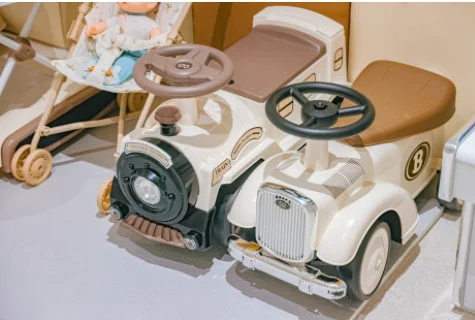

6F · OROT
Orot — 在6樓俯瞰海洋
建築最高層，6樓。海灘與海面在腳下展開，日落時分的按摩浴缸是 Orot 最出名的地方。
About Orot
再高一層的位置， 日落停留更久的房間
Orot 位於6樓。比3樓 Heyum 高一層俯瞰同一片廣安里海面，整段海灘的弧線、廣安大橋以及更遠的海平線都展開在眼前。日落時放滿浴缸的水，夕陽會一路照進房間。
客廳與按摩浴缸之間沒有隔牆，玩水與休息在同一個空間完成。餐桌也朝向窗邊，用餐時也不會錯過海面。
16點入住、12點退房。最後一天早上不必趕，可以再看一次海再收拾行李。
將於新分頁開啟 Airbnb 房源頁面。

位置
釜山水營區民樂水邊路13 · 6樓
面積
約200平方公尺整層
人數
8人標準 · 最多12人
臥室
3間（5張雙人床）
衛浴
2間
入住 / 退房
16:00 / 12:00
景觀
最高層海景 · 日落
訂房
Airbnb（下方按鈕）
Highlights
在 Orot 不要錯過
01
日落時的6樓浴缸
夕陽西下時放水，廣安里的晚霞會填滿整面窗。
02
與客廳相連的浴缸
沒有隔牆。孩子玩著就能下水，再回到沙發。
03
窗邊餐桌
坐著也能看到海。早晨的咖啡與夜裡的酒都朝著海。
04
12點退房
最後一天早上更悠閒：海邊散步回來再收行李也來得及。
Gallery
Orot 客房照片
從日落浴缸開始，依序是客廳、餐桌與臥室。



Floor Plan
6樓格局

浴缸與客廳連成一片，周圍是3間臥室、2間衛浴與兒童房。兩組人同住動線也不會打結。
Orot 6樓格局圖（客房結構參考）
Amenities
Orot 設施
客廳
- 100吋投影機
- 空氣清淨機
- 沙發
- 大型坐席桌
- 按摩浴缸
- 嬰兒高腳椅
臥室
- 雙人床5張
- 衣櫃
- 化妝台3
- 吹風機3
廚房
- 冰箱
- 微波爐
- 電子鍋
- 製冰淨水器
- 咖啡機
- 電熱水壺
- 電磁爐
- 餐具·廚具
- 紅酒杯
- 滾筒洗衣機
衛浴
- 洗髮精·沐浴乳
- 洗手乳
- 洗面乳·卸妝油
- 毛巾·浴巾
兒童
- 攀爬架·彈跳床
- 溜滑梯·鞦韆
- 32吋遊戲機
- 50吋電視（YouTube·Netflix）
Location
從 Orot 步行逛廣安里
下電梯就是海灘路。去走走剛才在6樓窗邊看到的那片海灘吧。
地址
釜山廣域市水營區民樂水邊路13 · 6樓
廣安里海水浴場
步行1分鐘
民樂生魚片中心
步行1分鐘
停車
免費1輛 · 車型需事先確認
Stay Guide
Orot 住宿須知
入住 / 退房
16:00 / 12:00（不可提前入住或延後退房）
人數
8人標準 · 最多12人 · 超出1人30,000韓元，未滿24個月免費
訪客
訂房人數以外擅自進入者將被退房，未住宿的訪客每位30,000韓元
寵物
不可攜帶
吸菸
全區禁菸 · 違反時罰款10萬韓元並退房
炊煮
僅可使用電磁爐 · 禁止明火、烤肉、魚類貝類等氣味濃烈的食物
寢具
禁止在寢具與沙發上飲食（汙損需賠償）
FAQ
訂 Orot 前常見問題
6樓能看到多少海？
透過落地窗可以看到整段廣安里海灘、海面與廣安大橋。比3樓 Heyum 高一層，海灘的弧線看得更開闊。
什麼時候能看到日落？
日落時段夕陽會從按摩浴缸一側的窗照進來。季節不同時間不同，建議先查好當天的日落時間。
浴缸和客廳是分開的嗎？
Orot 的客廳與按摩浴缸之間沒有隔牆，是相連的。帶孩子玩水後移動更方便。
12點退房可以做些什麼？
早餐後再去海灘走一圈，回來收拾行李時間也很足夠。12點前空出房間即可。
可以和朋友分別訂兩間嗎？
Orot 與 Heyum 是各自獨立的訂房。兩層都要使用，請在 Airbnb 分別訂兩筆。
Contact
Instagram
聯絡與交通
訂房前如有疑問，歡迎透過電話或社群平台與我們聯繫。下方地圖為住宿的實際位置。